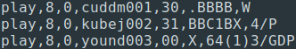

On August 28, 2020, the St. Louis Cardinals pulled off the first ever
3-2-8 double play. This inspired a very simple question: what other double plays have never been pulled off? So, I did what any rational baseball fan would do: I pulled every game available from
retrosheet and set about finding every double play in MLB history.
1. Getting Started
First off, a note. While I said that this data includes every MLB double play ever, this is not quite true. First off, the data set from retrosheet only goes back to 1916, so we miss any weird double plays from before that. Second, the data does not include 2020 data (yet), so our rare 3-2-8 double play won't appear in our results. At the end of the season, perhaps I'll go back and update the data. For now, we are looking at games from 1916-2019.
After I pulled all of our data, the next step was to identify double plays. Play-by-play data on retrosheet looks something like this:

Retrosheet has a good breakdown of
what everything is, but basically, the column of interest is the last one. Here, we have a walk (W), a popout to the second basemen (4/P) and a 6-4-3 groundball double play, with the (1) indicating that the runner from first was putout by the second baseman. For this analysis, the key is the DP indicating a double play. Using regex, you can separate out the double plays and remove extranseous information, such as where the ball was hit and what the runners did. Looking at code isn't generally very interesting, so I'm not including the cleaning rules here, but if for whatever reason you are interested, they can be found here
. After cleaning, I was left with a database containing 311,086 double plays of 1,638 different types. Unsurprisingly, the most frequent double play was the classic 6-4-3, followed by the 4-6-3, 5-4-3, and 6-3 double plays. These double plays represented 64% of all double plays in the database. There were 909 double plays that happened only once, most of which involved rundowns (e.g.
8-6-3-4-3-5-2).
Some of these plays are very weird. Take for example, an alleged 3-9-1 doubly play
that the Blue Jays pulled off against the Orioles in 1988. This play makes no intuitive sense whatsoever; this sequence should not happen. So, I took to reddit to see if anyone could help elucidate what happened here. Through some great detective work, u/philsfan1579 managed to find
this newspaper clipping from the game showing it as a 3-
6-1 double play, a much more logical play. So clearly, there was a transcription error here. Given that there is at least one example of a mis-transcribed play from 1988, there may be others from further back in history, Since there isn't a good way to reliably check the double plays in the database, however, I have to assume that what is written is accurate (aside from the Orioles example, which has been corrected). If I happen upon an explanation that rectifies a mistake in the database, I'll be sure to update the data, but I won't be looking to do so.
2. Three-man double plays
Of the 300,000 and change double plays in the database, 71.0% of them involved exactly three players. An additional 25.4% involved two players, while only 2.3% were unassisted. Combined, these account for 98.8% of the double plays in MLB history.